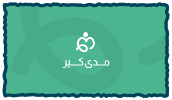
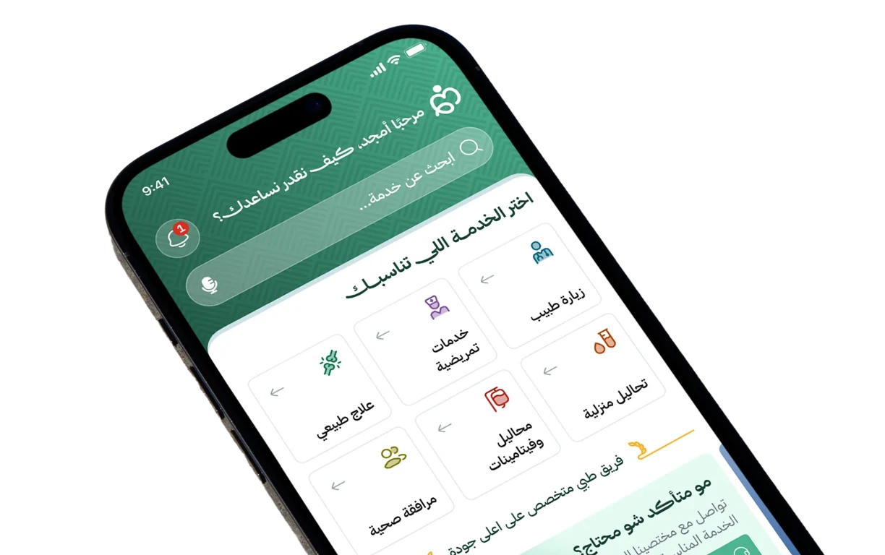

أسلوب تعامل الفريق الطبي
كوادرنا الطبية مدربة على أعلى مستويات الكفاءة والتعاطف الإنساني، ليتلقى أحباؤكم الرعاية الطبية بكثير من الود والمسؤولية.
الأمان… عندما يصل الطبيب إلى باب المنزل.الراحة… عندما يجد المريض الرعاية دون عناء الانتظار.الطمأنينة… عندما تشعر العائلة أن من يرعى أحبّتهم يعاملهم كأهله.
متوسط وقت الرد دقيقة واحدة
في مدى كير نؤمن أن الرعاية الحقيقية لا تبدأ بالأدوية فقط ، بل تبدأ بالاهتمام بكل التفاصيل

كوادرنا الطبية مدربة على أعلى مستويات الكفاءة والتعاطف الإنساني، ليتلقى أحباؤكم الرعاية الطبية بكثير من الود والمسؤولية.
نؤمن أن الشفاء يبدأ من الطمأنينة، لذلك نوفر بيئة علاجية مريحة تحافظ على خصوصية المريض وتعفيه من عناء المستشفيات.
الوقت يصنع الفارق في الرعاية الصحية؛ فريقنا مستعد دائماً لتلبية طلباتكم والوصول إلى باب منزلكم بأسرع وقت ممكن.
رعايتنا لا تنتهي بمغادرة المنزل؛ نلتزم بالتواصل المستمر معكم لمتابعة تطورات الحالة الصحية وضمان استقرارها تماماً.
نحن لا نقدم خدمة فقط ،،، بل نقدم شعوراً بالأمان
رعاية طبية احترافية داخل منزلكم لتقييم الحالة وتشخيصها ومتابعتها.
رعاية تمريضية متكاملة تشمل إعطاء الأدوية ، تغيير الجروح ، متابعة العلامات الحيوية ، والرعاية اليومية.
جلسات فيتامينات وريدية لتعزيز النشاط والطاقة ودعم الصحة العامة.
سحب العينات والتحاليل المخبرية داخل المنزل بكل سهولة وخصوصية واستلام النتائج اون لاين.
ندرك أن في الرعاية الصحية، كل ثانية تفرق ، لذلك فريقنا التقني والطبي يعمل بتناغم لضمان رد فوري واستجابة طبية لا تضاهى . جميع طواقمنا الطبية مرخصة ومعتمدة من وزارة الصحة مما يضمن أعلى مستويات الطمأنينة والأمان لكل أسرة من أهالينا.
”أكثر شيء أعجبني إنهم يهتمون براحة المريض نفسيًا قبل أي شيء. الخدمة إنسانية جدًا وتحس فعلًا إنهم يهتمون.
”بدل تعب المشاوير والانتظار بالمستشفى، الطبيب زارنا في البيت بكل احترافية. الخدمة مريحة جدًا خصوصًا لكبار السن. شكرًا مدى كير.
Booking was easy, the medical staff arrived on time, and the service quality exceeded expectations. Highly recommended.
”
”صراحة التجربة فاقت توقعاتي، الممرضة كانت راقية جدًا بالتعامل وحسّتنا فعلًا إن الوالدة بين أيدٍ أمينة. أكثر شيء ريّحنا سرعة الاستجابة والاهتمام بالتفاصيل.
”الخدمة ممتازة والتنظيم احترافي جدًا، المختبر وصل للبيت بموعده والنتائج وصلت بسرعة. وفروا علينا وقت ومجهود كبير.
The nurse was very kind and professional. My mother felt comfortable during the entire visit. Thank you Mada Care for the excellent home healthcare service.
”
”جربت خدمة الفيتامينات الوريدية وكانت تجربة ممتازة جدًا، الفريق محترف والتعامل راقٍ والمواعيد دقيقة. أكيد مو آخر مرة.
”تعامل محترم جدًا واهتمام حقيقي بالمريض، خصوصًا المتابعة بعد الزيارة. هذا الشيء نادر اليوم.
”كنت متخوفة بالبداية بالتعامل مع شركات رعاية منزلية مرة ثانية، لكن بعد أول زيارة عرفت الفرق فعلًا. مستوى الخدمة ممتاز ويستحق الثقة.
Very fast response and professional medical team. The home visit experience was smooth and comfortable for my family.
”
طاقم طبي مرخص ومعتمد وفق أعلى المعايير الصحية المحلية والعالمية
نظام استجابة سريع يضمن وصول الفريق الطبي في وقت قياسي إلى منزلك
نحترم خصوصية المنزل ونقدم خدماتنا في بيئة آمنة وهادئة للمريض
شعارنا "نرعاكم كأهلُنا" ليس مجرد كلمات، بل منهج عمل يومي
نحن هنا لنزيل عنكم أي تساؤل ، ولنضع بين أيديكم كل ما يمنحكم الراحة.
في مدى كير، لا نختار إلا الأفضل. جميع كوادرنا الطبية (أطباء، ممرضين، وفنيين) مرخصين ومعتمدين من الهيئة السعودية للتخصصات الصحية، ويخضعون لتدريب مستمر ليس فقط على الجانب الطبي، بل على «فن التعامل الإنساني» لضمان أن تكون الزيارة تجربة مريحة وآمنة لأحبتكم.
نحن ندرك أن الوقت هو أغلى ما نملكه في ظروف المرض. لذلك، صممنا نظام استجابة ذكي يجعل متوسط وقت الرد لدينا لا يتجاوز دقيقة واحدة. بمجرد تأكيد طلبك، ستحصل على إشعار بتفاصيل الفريق وتوقيت وصوله المتوقع إلى باب منزلك.
مدى كير تقدم رعاية منزلية تخصصية ومجدولة مع وجود إمكانية لاستقبال الحالات الطارئة، وإذا كانت الحالة تستدعي تدخلاً طارئاً وفورياً (مثل صعوبات التنفس الحادة أو الحوادث) يمكننا نقل الحالة بسيارة إسعاف إلى أقرب مستشفى أو الهلال الأحمر.
بالتأكيد! هذا هو جوهر التزامنا بالشفافية والراحة. من خلال تطبيق «مدى كير»، يمكنك تتبع مسار الفريق الطبي مباشرة على الخريطة ومعرفة الوقت المتبقي لوصولهم بدقة، تماماً كما تتابع رحلتك المفضلة، وأيضاً يمكنك التحدث مباشرة من خلال شات مخصص مع الفريق الطبي أثناء قدومه لمنزلك.
علاقتنا لا تنتهي بمغادرة باب المنزل. نحن نقدم خدمة «المتابعة بعد الزيارة»، حيث يظل فريقنا على تواصل للاطمئنان على استقرار الحالة، ويمكنك الوصول لسجلك الطبي الكامل، نتائج تحاليلك، وخططك العلاجية في أي وقت ومن أي مكان عبر التطبيق.
نعم، نحن نغطي كافة أنحاء مدينة جدة، ونسعى دائماً لتوسيع نطاق تغطيتنا لضمان وصول «مدى كير» لكل منزل يحتاج إلى رعاية إنسانية واحترافية.
كل شيء رقمي وسهل، ستصلك نتائج تحاليلك المخبرية مباشرة عبر التطبيق فور صدورها، مع شرح مبسط للنتائج لضمان أن تكون الصورة واضحة أمامكم دائماً.
لا تزال لديك أسئلة؟ تواصل مع فريقنا مباشرة
الرعاية الطبية صارت أقرب لك، احجز زيارة منزلية بدقايق وخلّ الطبيب أو الممرض يوصلك وين ما كنت. تقدر تتابع ملف مريضك وتقاريره، وتبقى على تواصل مع فريق الرعاية في أي وقت، من غير زحمة ولا انتظار. الراحة والأمان صاروا بين يدينك.

اترك بياناتك، وسيتواصل معك فريقنا لتأكيد الموعد.
رقم الطلب:
شكرًا لثقتك بمدى كير. سيتواصل معك فريق خدمة العملاء قريبًا لتأكيد الموعد وتنسيق الخدمة.